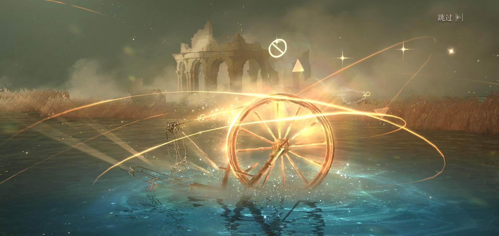
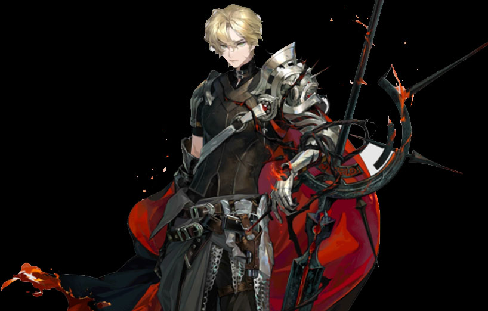
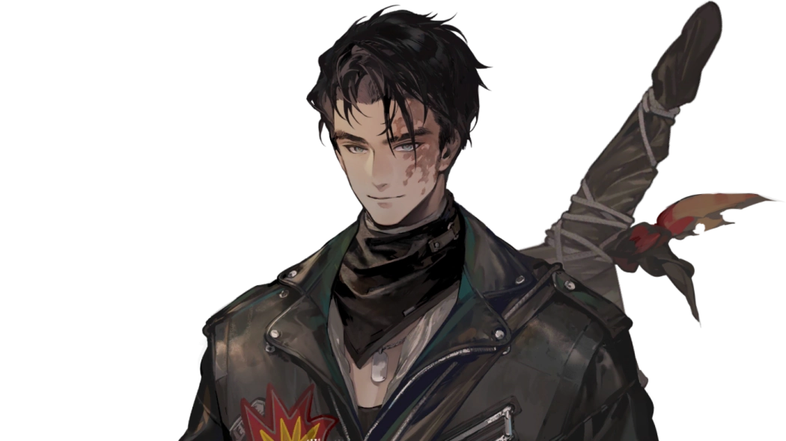
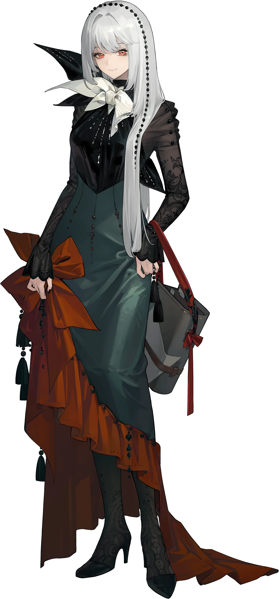
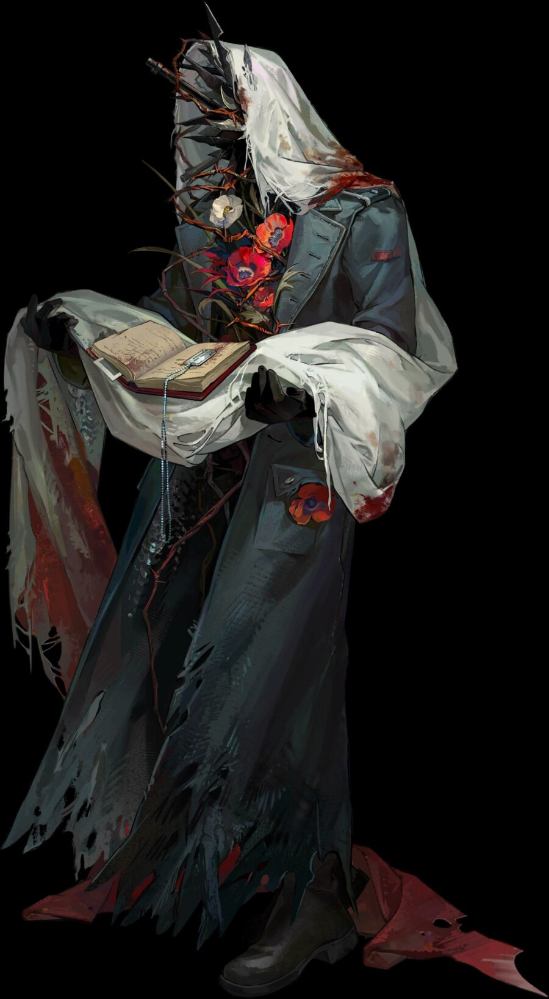
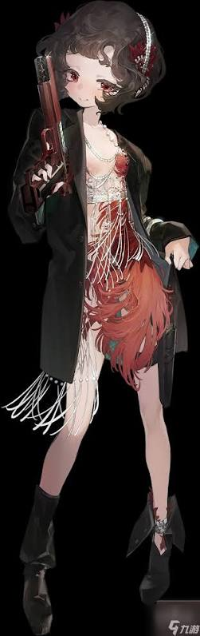
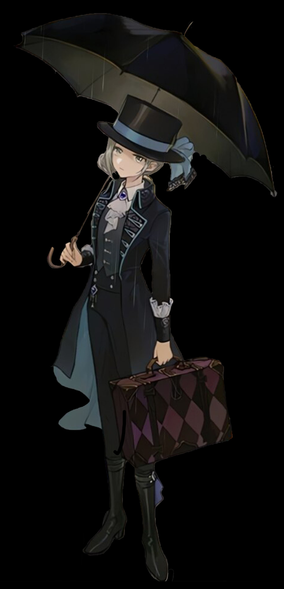

種族：
神秘学家纯血种：
纯洁的神秘学血统,高贵,神秘,几乎不出现排异反应,在神秘学界中地位较高
神秘學家混血種：
駁雜的神秘學血統，早夭率高，排異反應明顯，曾一度被視為「詛咒之子」
神秘學家感染種：
意外被神秘學血統感染的人類，生存率極低，常表現出不同程度的精神發育障礙
超自然者：
歷來文字紀錄中存在的神秘動物誌怪生物、奇異種族等，多為自然演化而來，
數量稀少，神秘學力量強大
意識喚醒者：
受某種力量影響而產生意識的有機物或無機物，多為偶發現象，難以複製，
無法考證其內在規律
神秘學家可大致劃分為人形（與人類樣貌別無二致）與非人形
神秘學家和人類被用以：「衝動」、「理智」劃分，他們的神秘術被視作不可控的存在，
因此在某些時代中常常被歧視
人類：
- 被視作「理性」、「穩定」的象徵，在時代中，同級的人類地位都高於神秘學家的地位
- 無法使用神秘術，同時也無法探測神秘術波動及暴雨
- 有一部分擁有神秘學家的稀薄血脈，但無法使用神秘術，因此被劃分為「人類」






